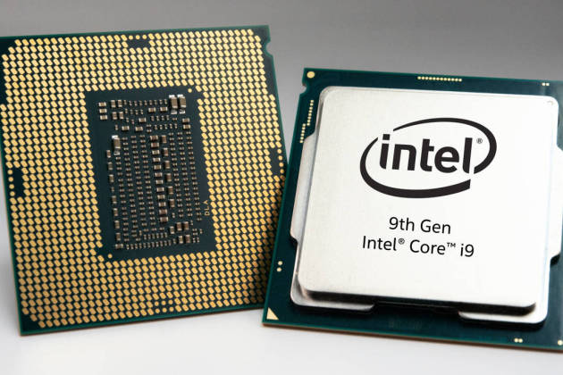
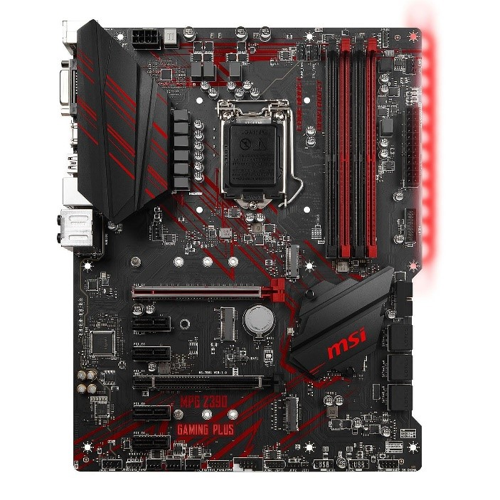
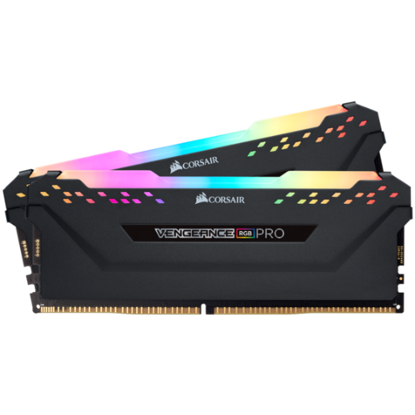
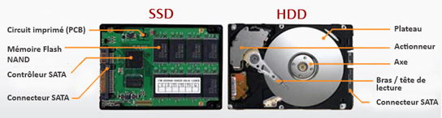
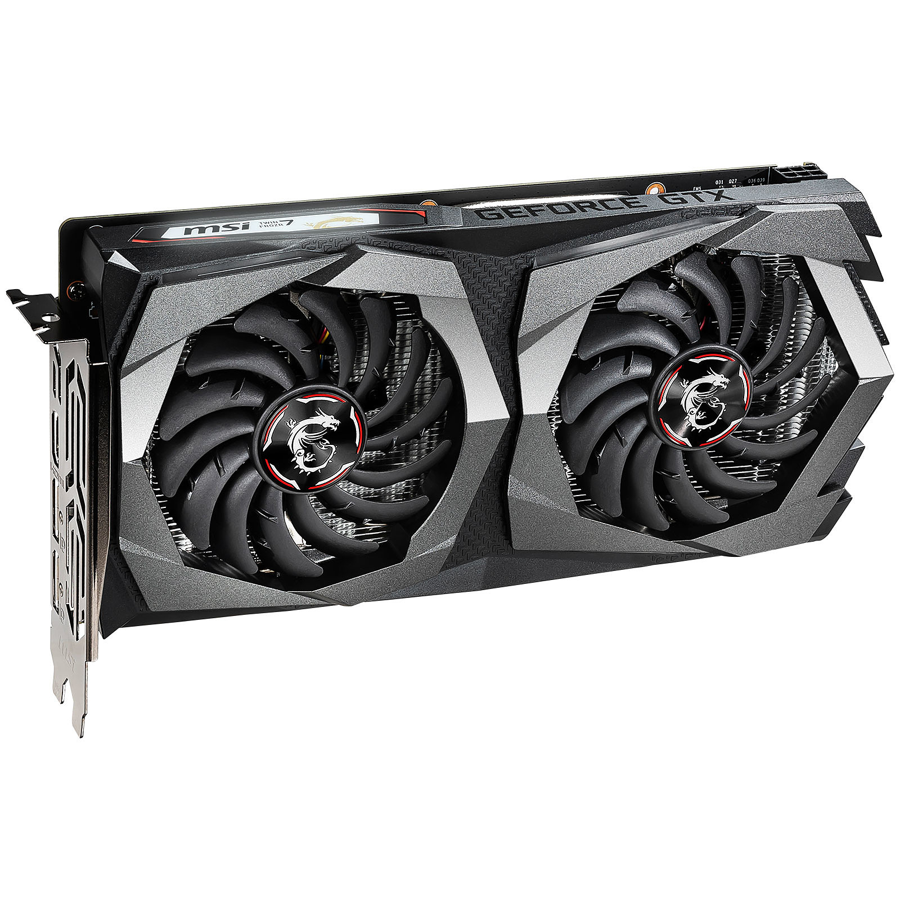
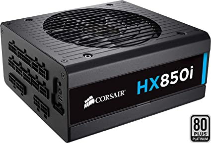
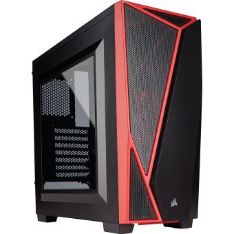
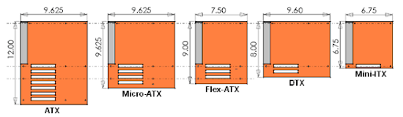

Voici le second article consacré au montage d’un ordinateur maison, cette fois si nous aborderons le choix des composants. Si dessous vous trouverez la liste des composants nécessaire au fonctionnement de votre ordinateur ainsi que des conseils pour vous aider à vous décider et éviter d’acheter des composants non compatibles les uns avec les autres. Pour que votre ordinateur fonctionne il vous faut au minimum :
L’ordre de la liste si dessous est important ! Plus le composant se rapproche du haut de la liste, plus celui-ci doit être choisi tôt par rapport aux suivants.
Le processeur est le cerveau de l’ordinateur, c’est lui qui organise les échanges de données entre les différents composants et qui fait les calculs nécessaires pour communiquer avec l’utilisateur et vous afficher des informations. Il accompli des milliards d’actions par seconde, pour votre ordinateur un suffira amplement, même si certains ordinateurs peuvent en avoir plusieurs ! Dans les ventes de processeurs nous nous intéresserons uniquement à la marque Intel et AMD qui se partagent le marché mondial. Pour refroidir votre processeur il vous faudra également un ventirad, un composant qui permettra de refroidir votre ordinateur par air, chez AMD il est généralement offert et fonctionne très bien, mais pour Intel il faudra le prendre en plus. Il existe également le Water Cooling, plus efficace mais plus onéreux et complexe à mettre en place.
La carte mère est la colonne vertébrale de l’ordinateur, tous les composants y sont reliés. Entre autres, la carte mère héberge le chipset. C’est en fonction du chipset de la carte mère et de sa compatibilité avec votre processeur précédemment choisi que vous sélectionnerez votre carte mère et la mémoire RAM compatible. Nous prendrons un exemple après vous avoir présenté la RAM.
RAM ou Random Access Memory est un espace qui stocke provisoirement des données qui serviront au fonctionnement de l’ordinateur. Il est plus rapide pour l’ordinateur d’aller chercher des données dans la Ram que dans un disque dur ou un SSD, plus simplement, plus vous avez de RAM plus votre ordinateur sera fluide. 8 go semble être la norme aujourd’hui pour faire de la bureautique, mais 16 go si vous faites du jeu sera plus approprié de nos jours.
Pour que vous compreniez mieux comment choisir ces trois composants les plus sensibles de votre ordinateur nous allons prendre l’exemple de mon dernier ordinateur acheté l’année dernière. J’ai listé pour vous les caractéristiques qu’il faut impérativement regarder, si celles si ne sont pas compatibles votre ordinateur ne fonctionnera pas.
Carte mère (MSI B450 Gaming Plus) :
Processeur (AMD Ryzen 7 2700X) :
RAM (G.Skill Aegis 32 go) :
Pensez également à vérifier également si la carte mère possède une carte son et réseau, si ce n’est pas le cas il vous faudra acheter un casque audio, des enceintes ou une carte son et une carte externe ou interne pour pouvoir vous connecter aux réseaux.
Le choix du stockage doit se faire en fonction de vos besoins, il est inutile de posséder des terra de stockage si vous n’en n’utiliserez jamais la moitié. Voici un tableau vous donnant une idée du stockage dont vous aurez besoin :
| 1 To | 2 To | 3 To | 4 To |
| 100 films FHD | 200 films FHD | 300 films FHD | 400 films FHD |
| 20 400 photos HD | 40 800 photos HD | 61 200 photos HD | 81 600 photos HD |
| 17 000 h de musique | 34 000 h de musique | 51 000 h de musique | 68 000 h de musique |
Une fois la quantité de stockage nécessaire choisi, vous devrez choisir le type de disque, un SSD ou un HDD. Pour simplifier un disque SSD lit les données jusqu’à dix fois plus rapidement qu’un HDD, votre ordinateur sera donc plus fluide, surtout au moment du démarrage de celui-ci. Cependant les prix ne sont pas du tout les mêmes. Si vos besoins excédent un terra il semble donc judicieux de posséder un disque SSD accueillant le système d’exploitation et vous garantira un démarrage rapide couplé à un stockage plus important à l’aide de disques ou d’un disque HDD. Un disque SSD devrait cependant avoir une durée de vie supérieur à celle d’un disque HDD puisque ne contient aucun élément mécanique susceptible de rendre l’âme. Si vous faites le choix d’acquérir un HDD, sachez qu’il en existe deux types différents, leur différence se jouant sur la vitesse de rotation du disque stockant les données. En effet il existe le 5 400 tour/min et le 7 200tour/min, plus le disque fait de tour par minute plus celui-ci lira un grand nombre de données rapidement, mais sera en général également plus bruyant.
Tout d’abord, sachez qu’une carte graphique ou GPU n’est pas nécessaire au fonctionnement de l’ordinateur si vous ne faites que de la bureautique avec celui-ci, les processeurs Intel et certains AMD doté d’une carte graphique intégrée vous suffiront amplement. Cependant si vous voulez faire du gaming avec votre machine il vous en faudra impérativement une. Les prix des cartes graphiques varient entre 40€ et plus de 2 000€ jusqu’à plus de 7 000€ pièce, vous vous doutez donc bien du nombre de choix disponibles dans cette catégorie. Pour faire votre choix nous vous conseillons le site internet des Numériques qui effectuent des tests poussés sur les cartes graphiques du moment et les compares. https://www.lesnumeriques.com/carte-graphique/msi-radeon-rx-5700-xt-gaming-x-p53995/test.html
En général nous allons dire que jusqu’à 300€ on se trouve dans de l’entrée de gamme, entre 300€ et 600€ dans le moyen gamme et au-delà du haut de gamme. Une carte de 6 go est amplement suffisante pour faire tourner la plupart des jeux actuels en ultra. Les cartes supérieures à 8go serviront plus aux professionnels qui ont besoin de grosses puissances de calculs pour générer des simulations par exemple.
L’alimentation est le dernier composant à choisir avec le boitier, car il se choisit en fonction des composants choisi précédemment. De même manière que pour l’espace de stockage dépenser plusieurs centaines d’euros dans une alimentation surpuissante et qui ne corresponde par à vos besoins est inutile, d’autres feront l’affaire pour beaucoup moins cher. Le site de l’un des fabriquant d’alimentation a mis en ligne un calculateur de puissance en fonction de vos composants qui vous permettra ainsi de choisir l’alimentation qui correspondra à vos besoins. https://www.bequiet.com/fr/psucalculator
Il est important cependant de prendre une marge de sécurité, si vous avez besoin de 450W, optez plutôt pour une alimentation de 550W ou 600W pour être à l’aise.
Concernant le look, vous trouverez forcément le style qui vous convient, mais avant de se soucier de cet aspect nous allons d’abord voir les besoins auxquels le boitier doit impérativement répondre. Le premier critère à prendre en compte est sa taille, on parle de barebone pour une tour faisant de 10 à 20 cm de haut, mini pour une tour faisant de 30 à 42 cm de haut, moyenne si elle fait entre 35 et 45 cm et enfin de grande tour si elle mesure 60 cm de haut. Plus le boitier sera petit, plus celui-ci risque de chauffer, à utiliser donc si vous comptez faire de la bureautique, dans le cas contraire comme pour du gaming, une tour moyenne ou grande est à privilégier. Il est également important de regarder le format de votre carte mère et celui du boitier que vous allez choisir, le schémas si dessous vous résume les différents types possibles. Nous terminerons ce tutoriel dans le prochain article consacré au montage de votre machine.
 